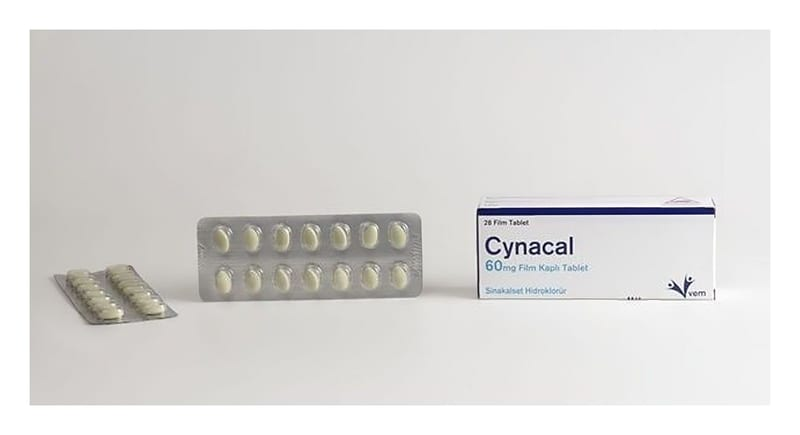

Cynacal 60 mg Film Kaplı Tablet (Sinacet), 28 Adet

Ne için kullanılır
KT · Bölüm 1CYNACAL, yeşil film kaplı bir tablettir. Tabletler oval ve bikonveks şekillidir. CYNACAL, 60 mg film kaplı tablet içeren blisterlerde bulunmaktadır. Blister paketleri bir kutu içinde 28 tablet içerir. CYNACAL, vücudunuzda paratiroid hormon (PTH), kalsiyum ve fosfor düzeylerini kontrol ederek etki eder. Paratiroid bezleri olarak adlandırılan organlarla ilgili sorunlara bağlı
hastalıkların tedavisinde kullanılır. Paratiroidler, boyunda tiroid bez yanında bulunan ve paratiroid hormonu (PTH) üreten 4 adet küçük bezdir.
CYNACAL aşağıdaki durumlarda kullanılır: Kanlarındaki atık ürünlerin temizlenmesi için diyaliz tedavisine ihtiyaç duyan ciddi böbrek hastalarındaki sekonder hiperparatiroidizm tedavisinde. Paratiroid kanseri olan hastalarda kanda yüksek kalsiyum düzeylerinin (hiperkalsemi) düşürülmesinde. Paratiroid bezinin çıkarılmasının mümkün olmadığı durumlarda veya bezin çıkarılmasından sonra kalsiyum düzeylerinin halen yüksek olduğu primer hiperparatiroidizm hastalarında kandaki kalsiyum düzeylerinin (hiperkalsemi) düşürülmesinde.
Primer ve sekonder hiperparatiroidizmde paratiroid bezleri çok fazla miktarda PTH üretmektedir. “Primer”, hiperparatiroidizm herhangi bir diğer nedenden kaynaklanmadığı, “sekonder” ise hiperparatiroidizmin diğer bir durumdan, örneğin, böbrek hastalığından kaynaklandığı anlamına gelir. Primer ve sekonder hiperparatiroidizm kemiklerdeki kalsiyumun kaybına neden olabilir, bu durum kemik ağrısı ve kırıklara, kan ve kalp damarları ile ilgili sorunlara, böbrek taşlarına, mental hastalık ve komaya yol açabilir.